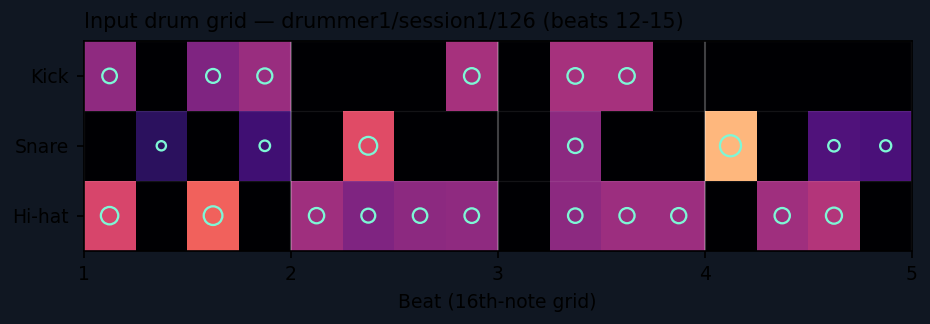
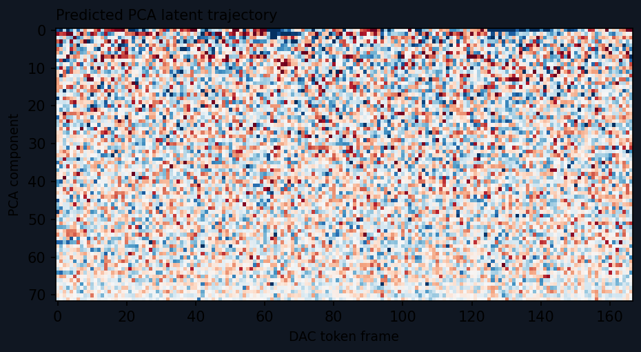

Example 1 drummer1/session1/126
beats 12–15 · 124 BPM · 1.94s · 24 onsets

GeneratedDiffusion + RVQ-CE, 25 steps
RegressorDirect PCA regressor (baseline, 1-pass)
ReferenceGround-truth target, DAC reconstruction
Predicted PCA latent trajectory
